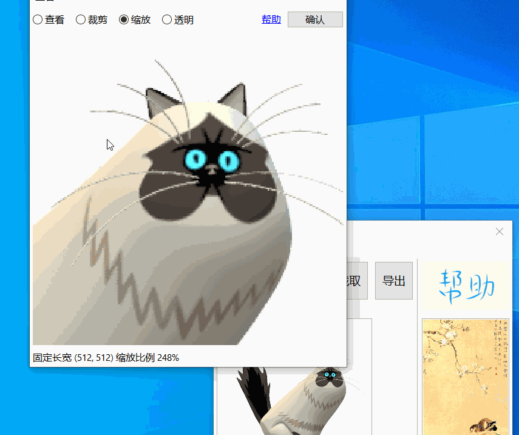
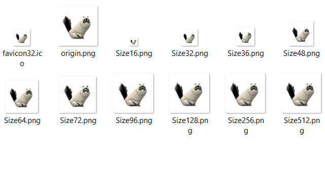

菜单
文件
用户
登录与登出用户
编辑
载入选框
载入上一次关闭程序时选框
撤销
针对 内置编辑器 使用.双击图片区域，会打开内置编辑器，在内置编辑器里操作后确认，会覆盖当前图片. 返回主界面后撤销可以还原到编辑前图片，方便内置编辑与恢复

正方模式
正方模式，横长模式，竖长模式，三种固定像素选框
为减少图片失真造成的差异, 软件限制灵活缩放
参见 截图功能
设置
当前选项有
- 选择使用剪切板
截图时会自动复制到剪切板，注意可能会冲掉上一次剪切板内容，请小心使用 - 选择外置编辑器
选择外置编辑器对图片编辑 - 创建桌面快捷方式
重置 / 修复
当软件出现问题时可以尝试此选项，正常情况下 请勿选择
工具
导出位置
导出图片位置，查看导出后图片
编辑图片
外置图片编辑器，方便快速打开编辑器并编辑图片，在设置里设置.
多重导出
一键导出多种 png 尺寸，一张 32 * 32 favicon.ico.

OCR
请查阅 OCR
帮助
帮助
关于
关于 RectIcon